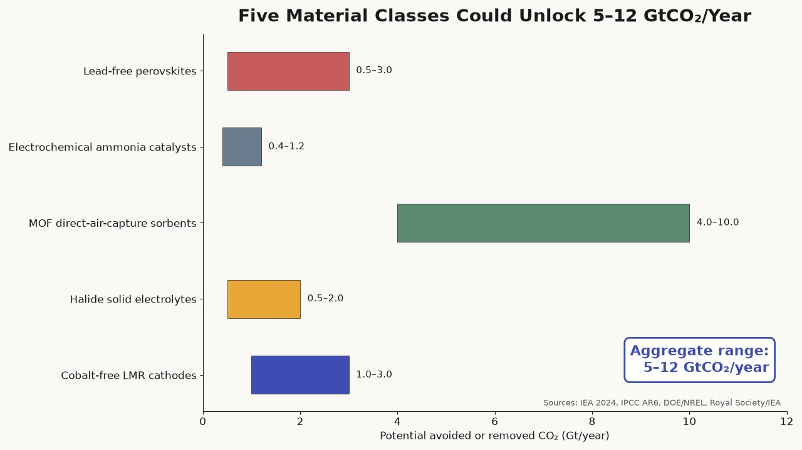
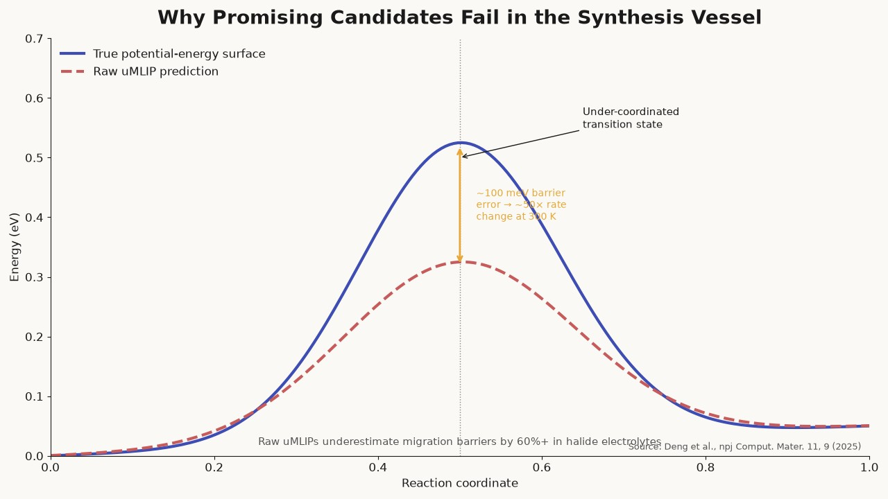
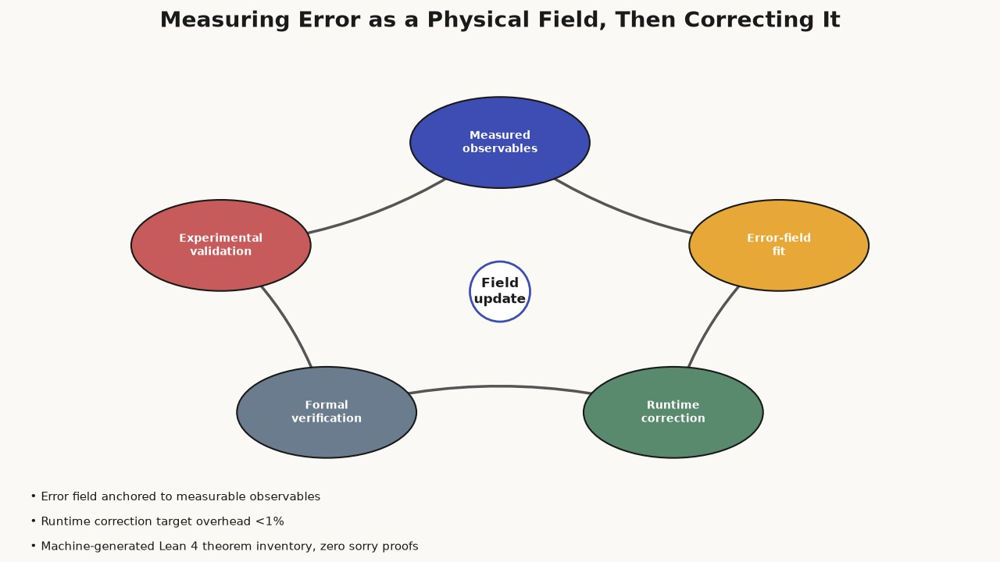
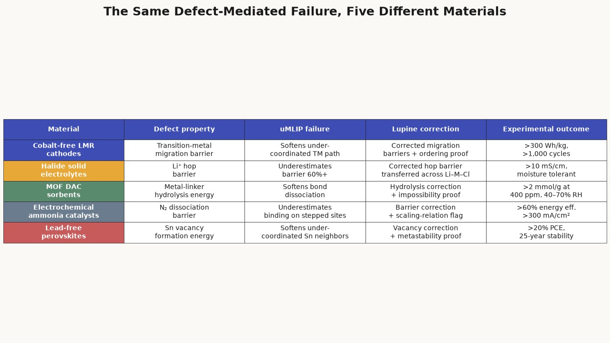
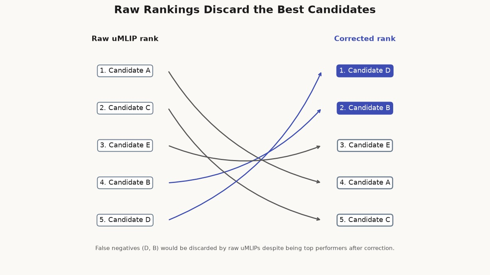
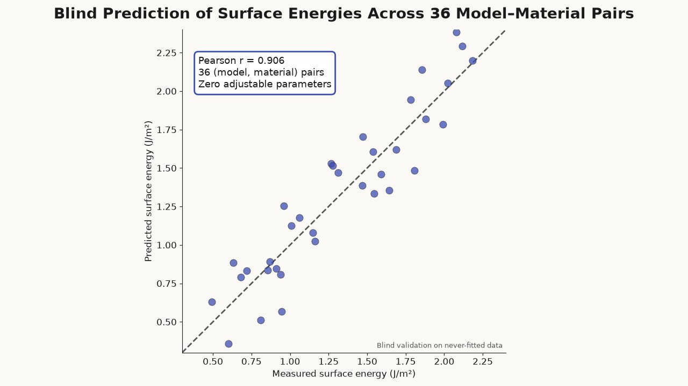
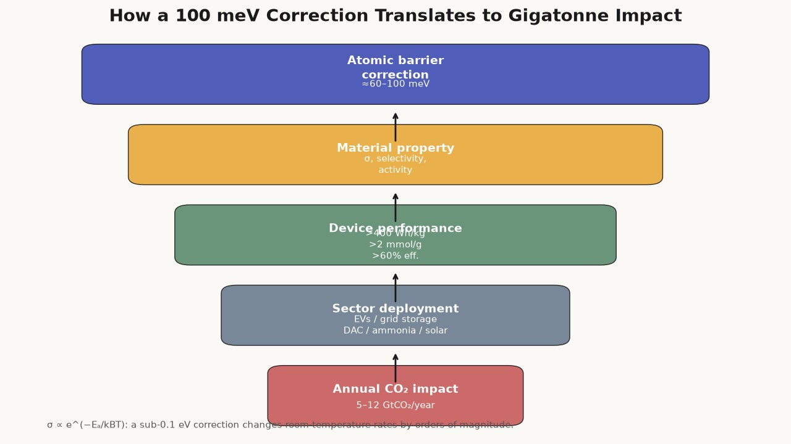
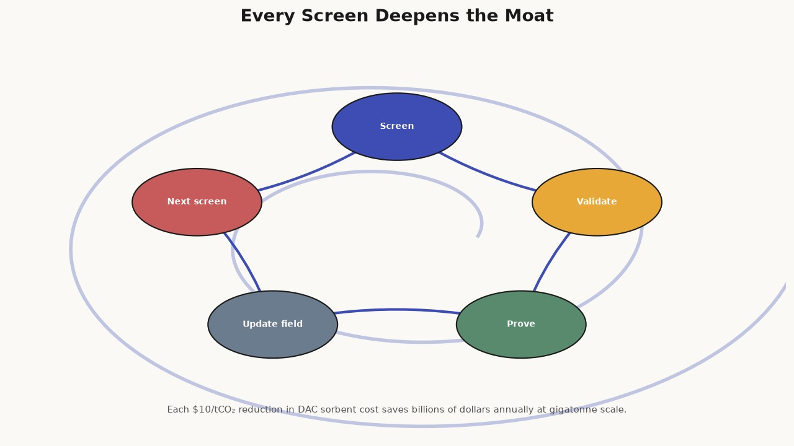
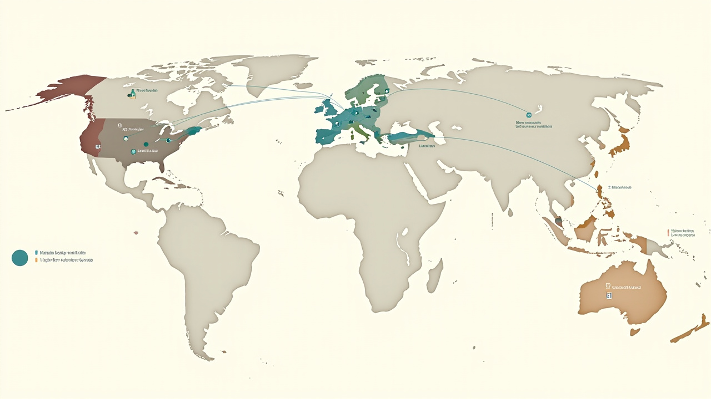
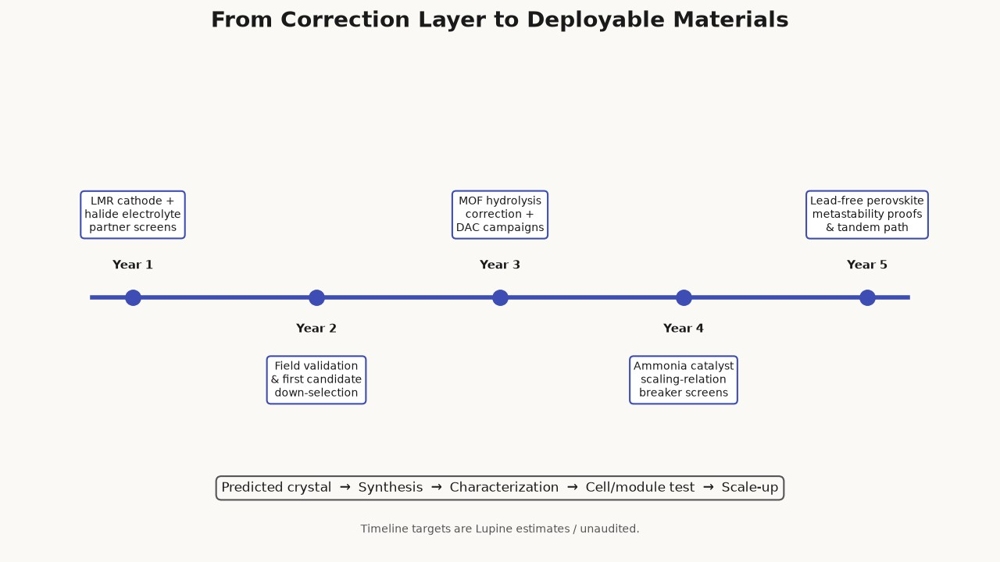

article
Five Materials That Could Unlock 5–12 GtCO₂/Year
A portfolio-level view of the five material classes Lupine Science is targeting for climate impact.


The difference between a climate model and a climate outcome is usually a material. Batteries need cathodes that survive a thousand cycles. Solid-state cells need electrolytes that conduct lithium without conducting dendrites. Direct air capture needs sorbents that bind CO₂ at 400 ppm and survive humidity. Ammonia synthesis needs catalysts that split dinitrogen without the Haber-Bosch furnace. Solar needs absorbers that rival lead perovskites without the lead. None of these materials exists at the required scale and price.
Lupine Science is not trying to invent them one at a time. We are building a correction-and-verification layer that makes computational discovery trustworthy enough to screen the multi-component spaces where these materials live. The result is a five-target portfolio with a combined climate potential of 5–12 GtCO₂/year.
This article explains why those five targets were chosen, what makes each one computationally hard, and how a single methodological idea—measuring systematic error as a physical field over local atomic environments—translates into progress across all of them. The aggregate number is not a fundraising flourish; it is the sum of five independently grounded impact estimates, each contingent on solving a specific defect-chemistry problem.

How the targets were selected
Each target satisfies three filters.
First, gigatonne-scale climate impact. The International Energy Agency estimates that batteries alone are directly linked to roughly 20% of the CO₂ reductions required by 2030, and indirectly to another 40%[1]. Two of our five targets are battery materials for exactly that reason; the other three address industrial emissions, legacy carbon removal, and solar deployment.
Second, discovery difficulty that has defeated existing methods. In every case, the property that determines performance—ion migration, defect formation, catalytic barrier, oxidation resistance—occurs at under-coordinated atomic environments where universal machine-learning interatomic potentials (uMLIPs) systematically soften the potential energy surface[2]. Raw uMLIPs are fast but wrong where it matters; DFT is right but economically impossible at screening scale. The result is a generation of predicted materials that look stable on paper and fail in the synthesis vessel or the device.
Third, a precise Lupine mechanism. Each target maps a known failure mode onto a specific correction or proof. LMR cathodes require corrected transition-metal migration barriers. Halide electrolytes require corrected Li⁺ hop barriers. MOFs require corrected hydrolysis energies and impossibility proofs for unsynthesizable frameworks. Ammonia catalysts require corrected N₂ dissociation barriers and selective flags for scaling-relation breakers. Lead-free perovskites require corrected Sn vacancy formation energies and provable boundaries for metastable phases.

The targets are not independent scientific bets. They are five instances of the same defect-mediated problem. This is deliberate: a platform that solves one of them credibly has a path to solving all of them, because the correction layer transfers across any material family whose error field can be anchored to measurable observables.

Batteries: cathodes and electrolytes as a pair
Cobalt-free lithium-manganese-rich cathodes
The highest-leverage near-term target is a cobalt-free lithium-manganese-rich (LMR) cathode exceeding 300 Wh/kg cell-level energy density, cycling stability above 1,000 cycles, and cost below $80/kWh. The EaCAM consortium at Argonne National Laboratory has demonstrated cobalt-free LMR systems at approximately 270 Wh/kg and ~$80/kWh[3].
The remaining barrier is voltage fade. LMR cathodes derive excess capacity from oxygen redox, but oxygen redox triggers oxygen loss, transition-metal migration from octahedral to tetrahedral sites, and surface reconstruction into spinel or rock-salt phases that block lithium diffusion[4]. Removing cobalt—essential for supply-chain security, since the Democratic Republic of Congo produces roughly 70% of global cobalt[5]—exacerbates the instability.
The compositional space is enormous. When concentration gradients, coatings, and doping profiles are included, the candidate count exceeds 10⁶. uMLIPs systematically underestimate the migration barriers that govern voltage fade because the transition state involves under-coordinated metal ions far from the bulk configurations in their training data. The result is candidate rankings that can be wrong by orders of magnitude in ionic mobility. A 100 meV barrier error changes the hopping rate by roughly e^(E/kBT) ≈ 50× at room temperature, enough to invert the ranking of candidate compositions by ionic mobility.
Lupine’s environment error field corrects those barriers at runtime. The correction is smooth over coordination-number space, so chemically similar compositions receive similar corrections and the true best candidate is not buried by ranking inversion. Formal verification then checks that predicted voltage profiles remain ordered after correction, preventing false-positive synthesis attempts.

Earth-abundant halide solid electrolytes
The second battery target is a halide solid electrolyte in the Li–Zr–Cl or Li–Fe–Cl family with ionic conductivity above 10 mS/cm, electrochemical stability against lithium metal, and moisture tolerance. Solid-state batteries with lithium metal anodes are the most credible path to >400 Wh/kg and the elimination of thermal runaway. Industry analysts project the solid-state battery market to grow by an order of magnitude or more over the next decade.
Current halide electrolytes such as Li₃InCl₆ and Li₃YCl₆ achieve 1–12 mS/cm[6], but indium and yttrium are critical raw materials. Replacing them with Zr, Fe, Al, or Mg could cut cost by roughly an order of magnitude while preserving the moisture tolerance that sulfides lack.
The computational challenge is the same shape as the cathode problem, but the property is Li⁺ hop barrier rather than transition-metal migration. Raw uMLIPs underestimate migration barriers by 60%+ due to PES softening at under-coordinated transition states[7]. Because ionic conductivity depends exponentially on barrier—σ ∝ e^(−Eₐ/kBT)—a large barrier error changes predicted conductivity by many orders of magnitude at a typical 300 meV barrier and room temperature. Fast-ion conductors are discarded as insulators before an experimentalist ever sees them.
Lupine corrects barriers on a representative halide such as Li₂ZrCl₆ and transfers the field across the Li–M–Cl space because all members share the same close-packed anion sublattice. Grain-boundary screening, which requires 500+ atom supercells where DFT is prohibitively expensive, becomes feasible with corrected uMLIPs. The false-negative elimination that plagues raw uMLIP screening is replaced by a ranked list whose top entries have DFT-level barrier accuracy.
Carbon removal: MOFs for direct air capture
Direct air capture is the only technology that can address legacy emissions regardless of source sector. The IPCC AR6 estimates cumulative carbon dioxide removal needs of 100–1,000 GtCO₂ by 2100, with annual rates approaching 10 GtCO₂/year by mid-century[8]. The material bottleneck is the sorbent.
Our target is a metal-organic framework (MOF) with CO₂ working capacity above 2 mmol/g at 400 ppm, stability under 40–70% relative humidity, and scalable synthesis cost below $50/kg. Amine-functionalized MOF-808 has reached 1.2 mmol/g at 400 ppm and 50% relative humidity[9]. At gigatonne scale, each $10/tCO₂ cost reduction saves billions of dollars annually.
The MOF design space spans trillions of structures, yet only a small fraction are experimentally synthesized. Stability is the harder problem than capacity. Water competes with CO₂ for binding sites and hydrolyzes metal-linker bonds; predicting humidity-stable frameworks requires evaluating defect formation energies at metal-linker bonds—exactly the under-coordinated environments where uMLIPs are least accurate[10].
Lupine’s correction addresses metal-linker bond dissociation energies, the key determinant of hydrolytic stability. Its impossibility proofs flag frameworks where mixed-metal nodes create coordination environments outside the measured field, separating candidates worthy of experimental investment from computationally unsupported ones. Ranking preservation then keeps the best humidity-stable frameworks at the top of a large screen, rather than scattering them beneath false-positive high-capacity candidates.
Industrial decarbonization: electrochemical ammonia catalysts
Ammonia synthesis via the Haber-Bosch process consumes 1–2% of global energy and emits more than 450 MtCO₂/year, primarily through steam methane reforming[11]. Electrochemical synthesis at ambient conditions, powered by renewable electricity, could eliminate those emissions while enabling distributed fertilizer production.
Lithium-mediated electrochemical nitrogen reduction has achieved >90% Faradaic efficiency at ambient conditions, but energy efficiency is stuck near 28% because lithium plating requires very negative potentials, dissipating more than 70% of input energy as heat[12]. The U.S. Department of Energy target is >60% energy efficiency at current densities above 300 mA/cm²[13].
The challenge is N≡N triple-bond activation—dissociation energy 945 kJ/mol—under conditions where the hydrogen evolution reaction is thermodynamically favored. DFT screening of N₂ adsorption on stepped surfaces spans coordination environments from c≈4 to c≈9, the full range where the error field operates. uMLIPs underestimate these binding energies due to PES softening, generating false-positive catalyst identifications. Scaling relations between N₂ and NHₓ binding energies compound the error: a mistake in one binding energy propagates to all others, potentially inverting turnover-frequency rankings.
Lupine corrects N₂ dissociation barriers on under-coordinated active sites, filtering out catalysts that would be experimentally inactive. More subtly, the field’s selective failure identifies scaling-relation-breaking catalysts that conventional screening misses. Single-atom or multi-metal sites with cooperative binding violate the first-shell approximation; Lupine’s impossibility proofs flag them for higher-level treatment, directing ab initio effort to the small subset most likely to exceed the volcano-peak activity limit.
Solar: lead-free perovskite absorbers
Lead-based halide perovskites have climbed from ~3% efficiency in 2009 to >26% single-junction and ~34.6% in perovskite-silicon tandems[14]. But lead toxicity threatens to limit terawatt-scale deployment, and the EU RoHS and REACH frameworks are progressively restricting lead.
The target is a lead-free perovskite absorber with certified power conversion efficiency above 20% and operational stability above 25 years. Tin perovskites are the most promising alternative, but Sn²⁺ oxidizes to Sn⁴⁺ in minutes under ambient conditions, and lead-free tin efficiencies have until recently been far below the >26% reached by lead cells[15].
The central degradation mechanism is oxygen insertion through Sn vacancy formation. uMLIPs systematically underestimate Sn vacancy formation energies because vacancies create under-coordinated Sn neighbors that bulk-trained models predict as too stable[16]. Correcting those energies identifies compositions where tin is most strongly bound and most resistant to oxidation, narrowing a vast double-perovskite search space to the subset worth synthesizing.
Metastability adds a second layer of difficulty. Many high-efficiency perovskites are kinetically trapped during solution processing; the equilibrium phase is often a non-perovskite polymorph with poor photovoltaic properties. Standard convex-hull screening discards these metastable phases, eliminating the compositions that achieve the highest efficiencies. Lupine’s impossibility proofs establish boundaries between candidates where predictions are reliable and candidates requiring synthesis-route engineering to access the metastable phase.
Synthesis: one failure mode, five targets
The five targets span batteries, carbon removal, industrial chemicals, and solar, but they share a common structure. In every case, functional performance is determined by defect-mediated properties in multi-component spaces. In every case, raw uMLIPs systematically soften the potential energy surface at the under-coordinated configurations that govern those properties. And in every case, brute-force DFT is too slow to screen the required compositional space.
Lupine’s response is not to train a bigger model. It is to measure the systematic error as a physical field over local atomic environments, correct it at runtime with analytic forces, and verify the resulting claims through machine-checked proof. The environment error field achieves Pearson r=0.906 in blind prediction of never-fitted surface energies across 36 (model, material) combinations with zero adjustable parameters.

Runtime correction adds modest overhead in the current Python implementation and will drop below 1% in a compiled LAMMPS overlay. 77 build-locked Lean 4 theorems with zero sorry proofs provide guarantees that statistical validation cannot match. Where correction fails, the platform proves impossibility rather than reporting a p-value, preventing experimental resources from being spent on computationally unsupported candidates.

This is why the targets form a portfolio rather than a list. The same correction layer that makes LMR cathode screening reliable also makes halide electrolyte, MOF, ammonia catalyst, and perovskite screening reliable. The moat deepens with each campaign: every screen adds validated field measurements, every impossibility proof sharpens the boundary of applicability, and every experimental validation tightens the feedback loop.

From predictions to partners
Predictions are necessary but not sufficient. The path from a corrected energy landscape to a commercial material runs through named experimental collaborators who can synthesize, characterize, and scale the top candidates.

For LMR cathodes, the immediate partners are the Manthiram Laboratory at UT Austin and TexPower EV Technologies, which operates a pilot facility producing NMA cathodes at >230 mAh/g[17]; the Battery500 Consortium led by Pacific Northwest National Laboratory, with 350 Wh/kg pouch cells demonstrated at >600 cycles[18]; and Forge Nano, whose atomic-layer-deposition coatings improve cycle life by 30%+ while reducing resistance[19]. For halide electrolytes, the Tier-1 list includes the CEDER Group at UC Berkeley and Lawrence Berkeley National Laboratory, the Janek/Zeier Group at the University of Münster, Argonne National Laboratory, and Solid Power Inc.
For MOFs, the starting points are UC Berkeley’s Yaghi and Long groups, Northwestern’s Farha Group, and BASF, the first commercial-scale MOF producer at several hundred tons per year[20]. For ammonia catalysts, DTU’s Chorkendorff group—which published the landmark Ca-mediated nitrogen reduction result in Nature Materials in 2024[21]—and Stanford’s SUNCAT Center provide rigorous verification and computational catalysis expertise. For lead-free perovskites, NREL, the University of Queensland’s Wang Group—holder of the certified 16.65% tin-halide record[22]—and Tandem PV Inc. anchor the path from absorber to tandem module.
These partnerships are the subject of the next article in this series. The point here is methodological: a correction layer without experimental partners is an academic exercise, and experimental partners without corrected predictions are flying blind. The 5–12 GtCO₂/year figure is reachable only when the two are coupled, and only if each candidate is validated through the chain of synthesis, characterization, cell or module testing, and scale-up that turns a predicted crystal into a deployable technology.

Footnotes
International Energy Agency, Batteries and Secure Energy Transitions, IEA, 2024. ↩︎
B. Deng et al., “Systematic softening in universal machine learning interatomic potentials,” npj Computational Materials 11, 9 (2025). https://doi.org/10.1038/s41524-024-01500-6 ↩︎
Argonne National Laboratory, “Cobalt-Free and Manganese-Rich Batteries Offer Improved Energy at a Lower Cost,” U.S. Department of Energy / EaCAM consortium, January 2026; J. Chen et al., “Defining Electrode-Level Metrics for Enabling Earth-Abundant Cathodes,” J. Electrochem. Soc. (2026). ↩︎
E. Hu et al., “Evolution of redox couples in Li- and Mn-rich cathode materials and mitigation of voltage fade by reducing oxygen release,” Nature Energy 3, 690–698 (2018); J.-J. Marie et al., “Trapped O₂ and the origin of voltage fade in layered Li-rich cathodes,” Nature Materials 23, 310–317 (2024). https://doi.org/10.1038/s41560-018-0207-z; https://doi.org/10.1038/s41563-024-01833-z ↩︎
International Energy Agency, The Role of Critical Minerals in Clean Energy Transitions, IEA, 2022. ↩︎
X. Li et al., “Water-mediated synthesis of a superionic halide solid electrolyte,” Angewandte Chemie International Edition 58, 16427–16432 (2019); “Halide-Based Solid Electrolytes for Advanced All-Solid-State Batteries: Design, Interfaces, and Electrochemical Performance,” Nano-Micro Letters 18, 225 (2026). ↩︎
B. Deng et al., “Systematic softening in universal machine learning interatomic potentials,” npj Computational Materials 11, 9 (2025). ↩︎
IPCC, Climate Change 2022: Mitigation of Climate Change, Working Group III Contribution to AR6, Cambridge University Press, 2022. ↩︎
X. Chen et al., “Computational Screening of Amino-Functionalized Molecules for Direct Air Capture of CO₂,” J. Phys. Chem. A (2026); P. Chen et al., functionalized MOF-808 DAC study cited therein (1.2 mmol/g at 400 ppm, 50% RH). ↩︎
B. Deng et al., “Systematic softening in universal machine learning interatomic potentials,” npj Computational Materials 11, 9 (2025). ↩︎
Royal Society, Ammonia: Zero-Carbon Fertiliser, Fuel and Energy Store, policy briefing, 2020; International Energy Agency, Ammonia Technology Roadmap, IEA, 2021. ↩︎
W. Chang et al., “Lithium-mediated nitrogen reduction to ammonia via the solvation-enabled N₂ activation,” Nature Catalysis 7, 342–352 (2024); X. Cai et al., “Lithium-mediated electrochemical nitrogen reduction: mechanistic insights to enhance performance,” iScience 24, 103105 (2021). ↩︎
ARPA-E REFUEL program, “Renewable Energy to Fuels Through Utilization of Energy-Dense Liquids,” U.S. Department of Energy, program targets: >60% energy efficiency, >300 mA/cm², >90% Faradaic efficiency. ↩︎
NREL, “Best Research-Cell Efficiency Chart,” National Renewable Energy Laboratory, updated 2025; LONGi 34.85% perovskite-silicon tandem record, NREL-certified, April 2025. ↩︎
P. Chen et al., “2D/3D tin-halide perovskite solar cell with certified 16.65% efficiency,” Nature Nanotechnology 20, 742–749 (2025). ↩︎
T. Leijtens et al., “Mechanism of tin oxidation and stabilization by lead substitution in tin halide perovskites,” ACS Energy Letters 2, 2159–2165 (2017). ↩︎
TexPower EV Technologies, company website and press releases, 2024–2025; Forge Nano / TexPower SBIR collaboration announcement, January 2024. ↩︎
U.S. Department of Energy / PNNL, “Battery500: Progress Update,” 2020; PNNL, “Powering Up to Address Challenges in Energy Storage,” March 2024. ↩︎
Forge Nano, “US-made ultrahigh-energy cathodes will enable low-cost electric vehicle batteries,” press release, January 2024; Forge Nano website, ALD-enabled battery materials. ↩︎
BASF, “BASF becomes first company to successfully produce metal-organic frameworks on a commercial scale for carbon capture,” press release, October 2023. ↩︎
X. Fu et al., “Calcium-mediated nitrogen reduction for electrochemical ammonia synthesis,” Nature Materials 23, 101–107 (2024). https://doi.org/10.1038/s41563-023-01702-1 ↩︎
P. Chen et al., “2D/3D tin-halide perovskite solar cell with certified 16.65% efficiency,” Nature Nanotechnology 20, 742–749 (2025); University of Queensland press release, April 2025. ↩︎